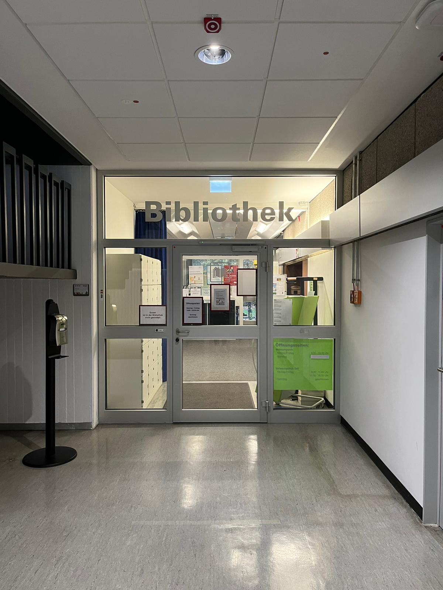

Wegweiser zur HTW Saar - Rotenbühl
Sekretariat
Unmittelbar hinter dem Osteingang findet ihr das Sekretariat im "Gebäude B". Dort erhaltet ihr schnelle Hilfe und Informationen bei Fragen bezüglich des Studiums.

Auditorium
Wenn ihr vom Sekretariat aus dem "Gebäude B" in das "Gebäude C" geht, kommt ihr direkt zum Auditorium. Dort finden sowohl Veranstaltungen als auch die Klausuren statt.

Bibliothek
Im Kellergeschoss des "A-Gebäudes" findet ihr die Bibliothek.
